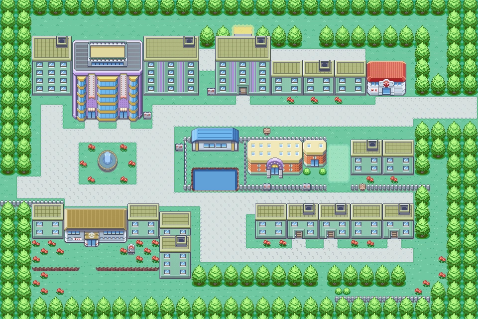

Kanto
Está situada al este de Johto, y al sur de Sinnoh. Está basado en la zona de Kantō, de Japón.

las diferentes ciudades, pueblos y rutas que forman Kanto son las siguientes:
-
Pueblo Paleta
- Casa del jugador
- Casa del rival
- Laboratiorio del profesor Oak
- Ruta 1
-
Ciudad verde
-
Gimnasio pokémon de tipo tierra
- Ruta 22
- Ruta 2
- Bosque verde
-
Ciudad Plateada

-
Gimnasio pokémon de tipo roca

- Museo de ciencia
- Ruta 3
- Ruta 4
- MT. Moon
- Ruta 11
- Ruta 9
- Ruta 10
-
Ciudad Celeste
-
Gimnasio pokémon de tipo agua
- Tienda de bicicletas
- Ruta 24
- Ruta 25
- Ruta 5
- Via subterranea: Ciudad Celeste - Ciudad Carmin
- Ruta 6
-
Ciudad Azafrán

-
Gimnasio pokémon de tipo psiquico
- Silph S.A.
- Dojo-karate
- Estación de tren
- Ruta 21
-
Ciudad Carmin
-
Gimnasio pokémon de tipo eléctrico
- Casa del gurú pescador
- Club de fans pokémon
- Barco S.S.Anne
- Cueva Digglett
- Ruta 2
-
Ciudad Azulona

-
Gimnasio pokémon de tipo planta
- Mansion Azulona
- Guarida Rocket (casino)
- Centro comercial
- Ruta 12
- Ruta 13
- Ruta 14
- Ruta 15
-
Ciudad Fucsia
-
Gimnasio pokémon de tipo veneno
- Zona safari
- Zona central
- Zona 1
- Zona 2
- Zona 3
- Zona 4
- Camino de bicis
- Ruta 16
-
Pueblo Lavanda

- Torre pokémon
- Emisora de radio
- Ruta 8
- Via subterranea: Ciudad Azulona - Pueblo Lavanda
- Ruta 7
-
Isla Canela
-
Gimnasio pokémon de tipo fuego
- Laboratiorio de isla Canela
- Mansión pokémon
- Isla Prima
- Isla Secunda
- Isla Tera
- Puente Unión
- Camino Candente
- Monte Ascuas
- Ruta 19
- Ruta 20
- Islas Espuma
- Ruta 23
- Calle Victoria
- Entrada
- Planta 1
- Planta 2
- Salida
- Liga pokémon
- Alto mando
- Lorelei
- Bruno
- Agatha
- Campeón de Kanto
En kanto se pueden encontrar 151 especies distintas de pokémons:
- - Bulbasaur
- - Ivysaur
- - Venusaur
- - Charmander
- - Charmeleon
- - Charizard
- - Squirtle
- - Wartortle
- - Blastoise
- - Caterpie
- - Metapod
- - Butterfree
- - Weedle
- - Kakuna
- - Beedrill
- - Pidgey
- - Pidgeotto
- - Pidgeot
- - Rattata
- - Raticate
- - Spearow
- - Fearow
- - Ekans
- - Arbok
- - Pikachu
- - Raichu
- - Sandshrew
- - Sandslash
- - Nidoran♀
- - Nidorina
- - Nidoqueen
- - Nidoran♂
- - Nidorino
- - Nidoking
- - Clefairy
- - Clefable
- - Vulpix
- - Ninetales
- - Jigglypuff
- - Wigglytuff
- - Zubat
- - Golbat
- - Oddish
- - Gloom
- - Vileplume
- - Paras
- - Parasect
- - Venonat
- - Venomoth
- - Diglett
- - Dugtrio
- - Meowth
- - Persian
- - Psyduck
- - Golduck
- - Mankey
- - Primeape
- - Growlithe
- - Arcanine
- - Poliwag
- - Poliwhirl
- - Poliwrath
- - Abra
- - Kadabra
- - Alakazam
- - Machop
- - Machoke
- - Machamp
- - Bellsprout
- - Weepinbell
- - Victreebel
- - Tentacool
- - Tentacruel
- - Geodude
- - Graveler
- - Golem
- - Ponyta
- - Rapidash
- - Slowpoke
- - Slowbro
- - Magnemite
- - Magneton
- - Farfetch'd
- - Doduo
- - Dodrio
- - Seel
- - Dewgong
- - Grimer
- - Muk
- - Shellder
- - Cloyster
- - Gastly
- - Haunter
- - Gengar
- - Onix
- - Drowzee
- - Hypno
- - Krabby
- - Kingler
- - Voltorb
- - Electrode
- - Exeggcute
- - Exeggutor
- - Cubone
- - Marowak
- - Hitmonlee
- - Hitmonchan
- - Lickitung
- - Koffing
- - Weezing
- - Rhyhorn
- - Rhydon
- - Chansey
- - Tangela
- - Kangaskhan
- - Horsea
- - Seadra
- - Goldeen
- - Seaking
- - Staryu
- - Starmie
- - Mr. Mime
- - Scyther
- - Jynx
- - Electabuzz
- - Magmar
- - Pinsir
- - Tauros
- - Magikarp
- - Gyarados
- - Lapras
- - Ditto
- - Eevee
- - Vaporeon
- - Jolteon
- - Flareon
- - Porygon
- - Omanyte
- - Omastar
- - Kabuto
- - Kabutops
- - Aerodactyl
- - Snorlax
- - Articuno
- - Zapdos
- - Moltres
- - Dratini
- - Dragonair
- - Dragonite
- - Mewtwo
- - Mew